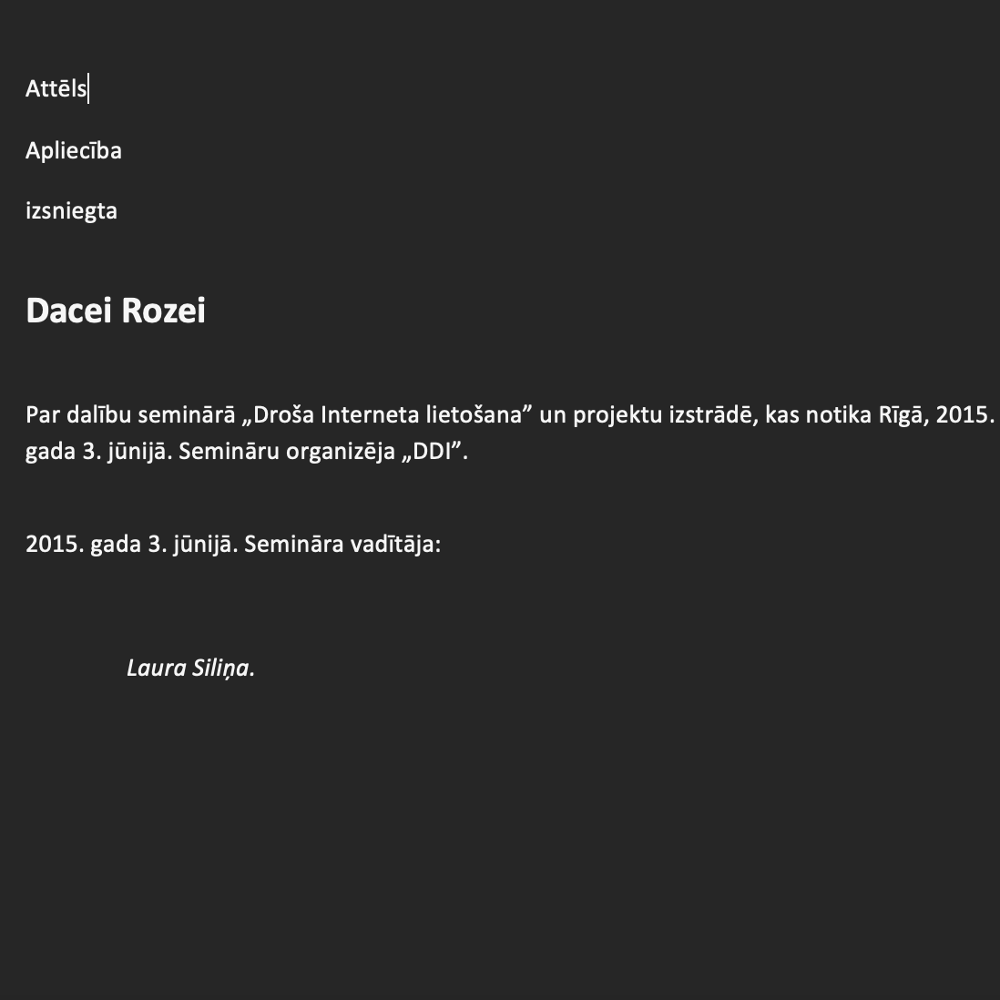
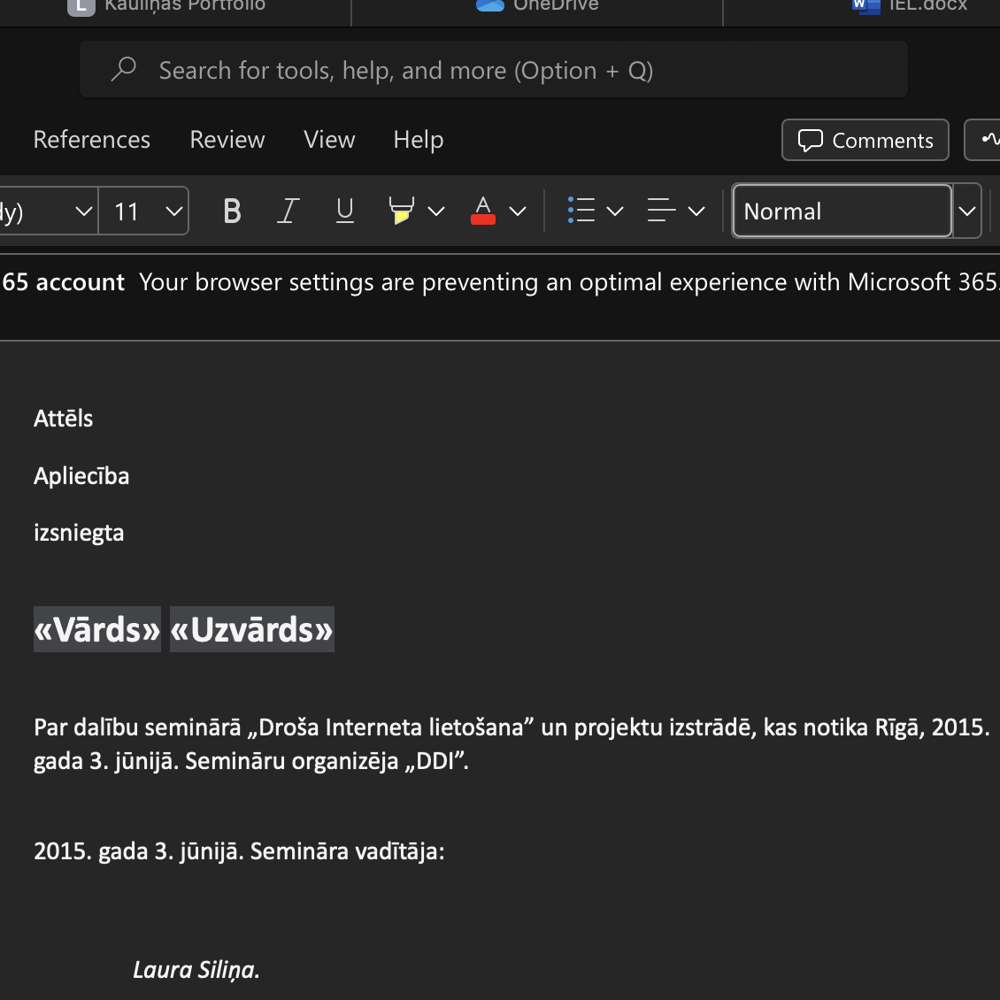
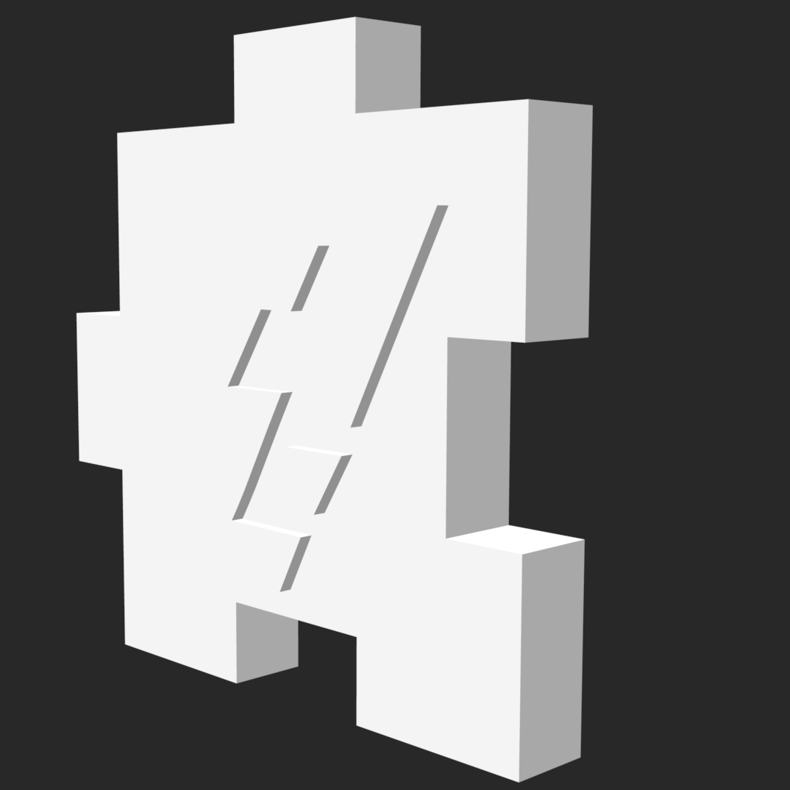
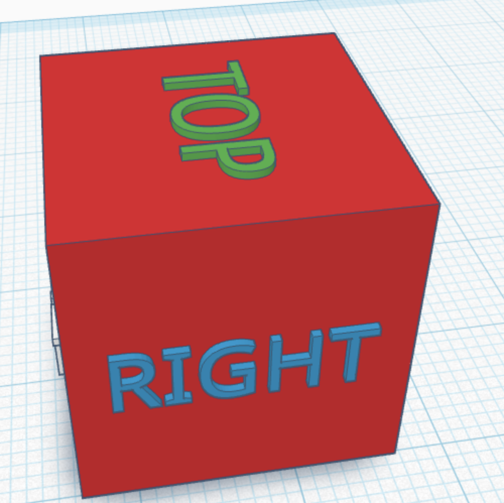
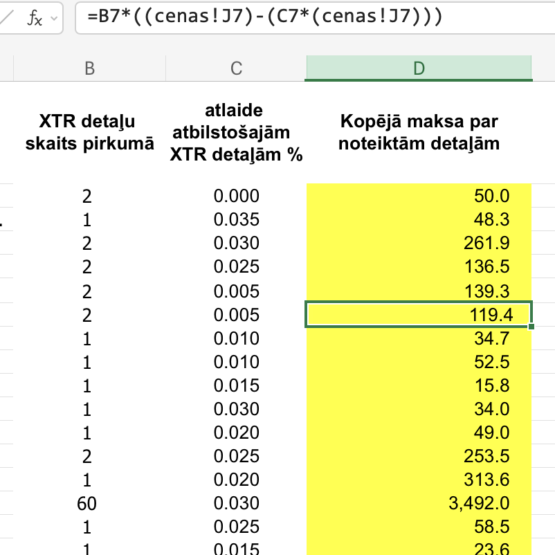
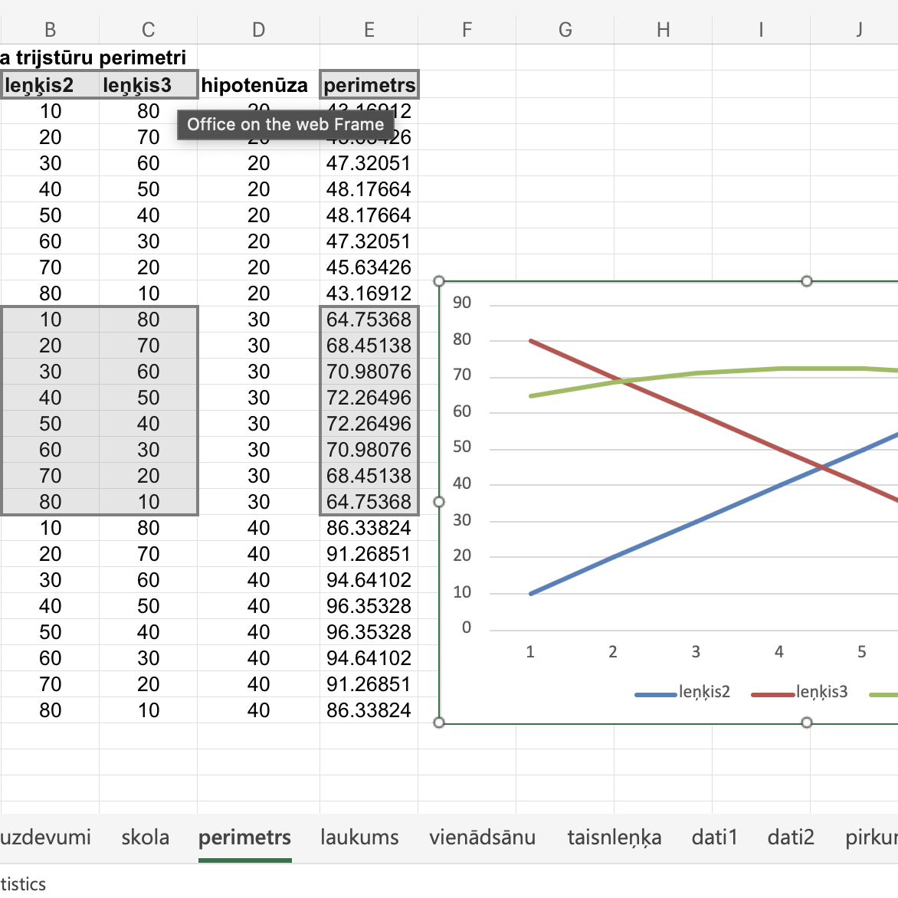

Portfolio.
Katrīna Elza Kauliņa.
10. klase
2024./2025. mācību gadā skolas datorikas stundās atkārtoju pamatskolā apgūto, tomēr guvu arī jaunas prasmes, kas nozīmīgas katra cilvēka profesionālajā karjerā. Visu apgūto tēmu sarakstu var aplūkot zemāk.
Prasmju līmenis
GIMP
3D Print
Video
MS Word
MS Excel
6+
Tēmas
Tēmas
5+
Atzīmes
Atzīmes
70%
Pamatskolas prasmes
Pamatskolas prasmes
30%
Jaunas prasmes
Jaunas prasmes
Tekstapstrāde
Tēmā "Tekstapstrāde" izmantojām platformu MS Word.


Attēlu apstrāde
Tēmā "Tekstapstrāde" izmantojām platformas Inkscape (vektorgrafika) un GIMP (rastrgrafika).
Vektorgrafika
Rastrgrafika
3D Modelēšana
Tēmā "3D Modelēšana" izmantojām platformu Tinkercad.


Video
Tēmā "Video" vērtētais uzdevums bija katram individuāli izveidot video par 3D modeli. Platformai bija brīva izvēle. Es izmantoju programmu CapCut.
Izklājlapas
Tēmā "Izklājlapas" izmantojām platformu MS Excel. Tēmas vērtētais uzdevums bija pārbaudes darbs.

